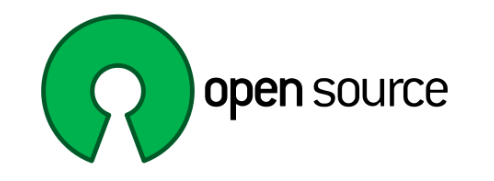

Open Source
Open Source Software(OSS)란?

오픈 소스 소프트웨어란 소스 코드를 공개해 누구나 특별한 제한 없이 그 코드를 보고 사용할 수 있는 오픈 소스 라이선스를 만족하는 소프트웨어를 말합니다. 통상 간략하게 오픈소스 라고 말하기도 합니다. 소프트웨어 말고도 개발 과정이나 설계도가 공개되는 경우에 하드웨어에도 오픈소스 모델이 적용될 수 있으며, 글꼴과 같은 데이터에도 오픈소스 개발 모델이 적용되는 경우가 있습니다.
자유 소프트웨어의 문제점을 인식한 에릭 레이먼드 , 부르스 페런스 등은 '오픈소스(Open Source)'라는 새로운 용어를 제안했다.
오픈 소스 소프트웨어란 소스 코드를 공개해 누구나 특별한 제한 없이 그 코드를 보고 사용할 수 있는 오픈 소스 라이선스를 만족하는 소프트웨어를 말한다. 통상 간략하게 오픈소스 라고 말하기도 한다. 소프트웨어 말고도 개발 과정이나 설계도가 공개되는 경우에 하드웨어에도 오픈소스 모델이 적용될 수 있으며, 글꼴과 같은 데이터에도 오픈소스 개발 모델이 적용되는 경우가 있다.
대부분의 오픈 소스 소프트웨어는 무료로 사용 가능 하기 때문에 프리웨어와 헷갈리는 경우가 많지만, 프리웨어는 무료로 사용 가능한 프로그램이고, 오픈소스는 소스코드가 공개된 프로그램이기 때문에 엄연히 다른 개념이다.
소스가 공개되어 있고, 이를 마음껏 개조해 사용할 수 있다는 점에서 개발에 필요한 방향으로 최적화가 용이하기 때문에 일반 개인사용 자보개발자 사이에서 강세를 보였고, 서버 운영 체제에서 리눅스가 그 대표적인 예이다.
오픈 소스 소프트웨어의 종류로는 Linux, Apache, MySQL, PostgreSQL, HaqIDB, james, sendmail, JBoss, Tomcat, Geronimo 등등이 있다.
OSI(Open Source Initiative)로 시작한 오픈소스
에릭레이먼드, 브루스 페런스 등은 기업들이 소스코드 공개에 보다 많이 참여할 수 있도록 지원했다. 동시에 1998년 ‘오픈소스 이니셔티브’(Open Source Initiative, OSI)를 설립하고 오픈소스에 해당하는 라이선스의 최소한의 기준을 정의(Open Source Definition, OSD)해 놓았다. OSI는 이 정의에 따라 인증, 관리 및 촉진시키는 일을 진행하고 있습니다. 현재 업계에선 자유 소프트웨어와 오픈소스를 혼용해서 쓰는 경우가 많지만, 일반적으로 오픈소스 소프트웨어는 자유 소프트웨어를 포함한 넓은 의미로 사용된다.
다음으로